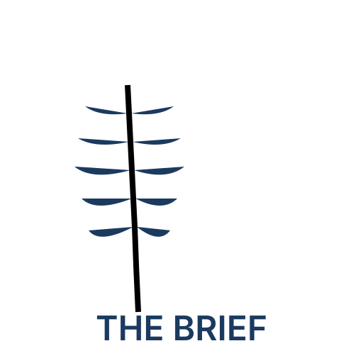
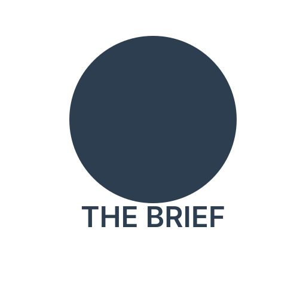
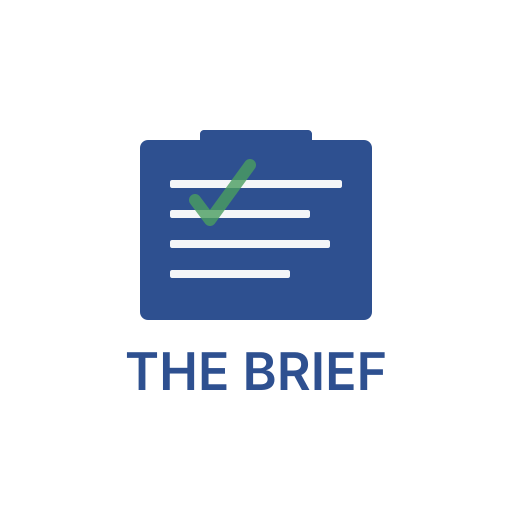
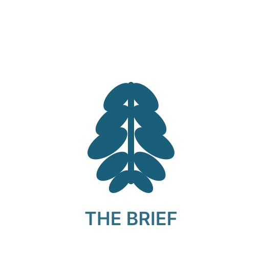
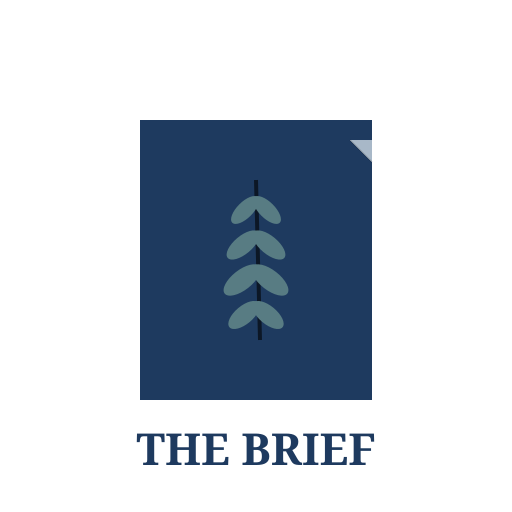

5 design variations exploring NZ political identity

Stylized silver fern forming a document shape. Clean geometric interpretation with the fern suggesting pages/documents. Navy blue and silver color palette.

Circular badge featuring a simplified parliament/beehive silhouette. Suggests authority and completeness. Charcoal and light blue color scheme.

Abstract ballot box with document lines and checkmark element. Royal blue and white/grey palette. Strong geometric composition.

Ultra-simple geometric fern with 5 leaf shapes. Optimized for small sizes (favicon-ready). Deep teal and silver. Icon-first design.

Folded document with subtle fern watermark. Professional business aesthetic. Navy, light blue-grey, with green accent for fern detail.